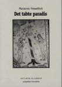

Det tabte Paradis.
 Bestil bogen her!
"Det tabte paradis" udkom på NET-BOG-KLUBBENS FORLAG
d. 25 april 2001Uddrag fra teksten: Jeg må kunne, når han kan. Der må findes en metode til fremstillingen, og jeg skal nok udgrunde den. Adam rynkede panden og tænkte, men ikke på Gud Herren og ikke på sig selv eller på noget af det, der fandtes. Han tænkte på det, som endnu ikke fandtes, det, der ikke var. Men som han skulle opfinde og tage æren og meget andet for.
Men foreløbig var det blot en lang række diffuse ideer, der svævede om i hans hjerne, og som han endnu ikke forstod at materialisere. Han sad på den bare jord med albuen hvilende på knæet og hagen støttet i hænderne. Og tænkte. Og i tanker tog han en håndfuld af den brune muld og lod den smuldre mellem fingrene. Den lugtede godt, mulden, og han spekulerede på, om den mon ikke var vejen til kvinden? Hende, som Gud ikke ville give ham, men som måtte være et sted, siden hun kunne nævnes og savnes.
Prøvende tog han en stor klump op i sine hænder og begyndte af forme den til en lille sammentrykt kugle, som han forsigtigt lagde på jorden. Endnu en klump skrabte han til sig og formede også den og lagde den ved siden af den første.
Nu lå de side om side på den bare, fugtige jord, og han betragtede dem grundende. Noget i den retning, ja, men ... mere ... mere ... han kunne ikke finde ordet.
Mens han sad således og tøvende lod hånden glide hen over de to små forhøjninger og følte ensomheden vokse, nåede en latter hans ører. En led gnæggen var det og ganske tæt ved.
Forskrækket løftede han hovedet og ventede så småt at møde en lattermild, men hånlig Guds overbærende blik. Men nej. Der var ingenting. Kun TRÆET stod foran ham i al sin urørlige pragt.
Han bøjede sig over sine stakkels små jordhøje og glattede dem, indtil de ikke mere kunne ses. Følte sig pludselig flov. For var det mon ikke dem, der vakte latter? Men hvem lo? Så hørte han det igen, og denne gang nøjedes han ikke med at løfte hovedet, han rejste sig hurtigt og gik hen til TRÆET og kiggede ind i dets vildnis af blade og blomster, og pludselig fangedes hans blik af noget, der fik blodet til at fryse i hans årer, selv om det var forår. Lige foran ham, inde mellem de grønne blade, glinsede et par små, plirrende øjne. Deres onde lys ramte ham som to sylespidse pile.
Han stønnede og skjulte ansigtet bag hænderne, men nu bugtede slangens ord sig ind i hans øregang: "Nå, så det tror han ... nej, han kan ikke lukke øjnene for sandheden."
"Sandheden?" mumlede Adam og klemte hænderne fastere mod ansigtet.
"Ha ha ha, ja netop den."
"Jeg forstår ikke,"
"Du kan ikke klare dig uden min hjælp. Se det er sandheden, og den er nok ilde hørt, hvad?" kom det inde fra træet.
"Hvem er du?" spurgte Adam bag hænderne.
"Du mumler, menneske, men jeg hørte dig godt. Og jeg gentager: uden mig er du magtesløs."
"Men hvem er du?" gentog Adam, hvid om læberne og med øjne, der sved bag de skærmende håndflader.
"Ha ha ha, det kunne du lide at vide."
"Ja."
"Jeg er, eller rettere jeg var havens mægtigste engel."
"Hvad er en engel?" spurgte Adam troskyldigt, for han havde aldrig set en.
"Vi er Herrens tjenere. Tidligere gik vi frit om i haven, men så kom du, og for at du ikke skulle få ideer ... nå ja, det her er altså min tolkning, han har sikkert en anden, så trak han os bort."
Slangen hostede nervøst, så fortsatte den lidt knirkende: "desuden havde han nogle oplevelser med os, som vi må betegne som højst uheldige, men det skal jeg ikke komme nærmere ind på."
"Hvorfor ikke?" spurgte Adam og kiggede ud mellem to fingre, for noget sagde ham, at slangen havde lukket sine øjne. Og ganske rigtigt, han så lige ind i et ynkeligt og forkrøllet slangeansigt med to små sammenklemte sprækker.
"Blæse være med den gamle affære," hvislede det fra gabet, mens tungen fór ud og ind. Adam kunne ikke lade være med at føle en pludselig medlidenhed med det ynkelige skravl, der nu hang hjælpeløst med hovedet, og han var nær ved at række hånden ud og glatte dens rynkede skind. Men det kunne han alligevel ikke.
Efter en lang, pinlig pause tog Adam mod til sig og spurgte: "Du lo så hånligt ad mig før. Er du ond?"
"Det kan man vist roligt sige," indrømmede slangen, "men pyt ... det er ikke mig og min ondskab, vi skal tale om, men dig. Og kvinden."
"Kvinden?"
"Ja for pokker, hende, du vil bespringe."
"Nå, ligefrem ..." Adam følte sig pludselig forlegen.
"Åh, lad os bare sige tingene lige ud. Hvorfor pakke dem ind i romantiske falbelader, som Den Gamle har for vane?"
Igen lo slangen, og nu havde den mistet enhver antydning af ynkelighed. Den knejsede med nakken, mens edder og galde silede i en lind strøm fra dens flab og øjne, og Adam trippede nervøst foran den. Han havde mest lyst til at stikke af, men slangen havde talt om kvinden, og derfor blev han.
"Jeg kan give dig hende," hvislede dyret og plirrede med øjnene, mens en stor, slimet klat langsomt sivede ud gennem gabet, der nu var vidt opspilet, hvorefter den med en let syden dryppede ned på hovedet af en lille, hvid blomst, der forskræmt foldede sine kronblade sammen og døde med et suk.
Adam ville flygte, men stod som naglet. Kvinden, kvinden, kvinden, ekkoede det i ham, og han syntes, at han kunne se hende lyslevende for sig. I al fald mærkede han hende i kødet: hvid og rød og nøgen, og med lange bløde arme, der snoede sig om hans hals.
Han sank en klump og stak sit eget hoved så tæt til slangens, som han turde.
"Jeg vil have hende," mumlede han.
"Koste hvad det vil?" forhørte slangen sig og lød på en gang listig og saglig.
Adam nikkede kraftesløst.
"Prisen er ...?"
"Lav, min ven," smiskede dyret, "ikke noget at snakke om, det eneste jeg forlanger, er din sjæl."
"Min hvad?" spurgte Adam og lod blikket glide ned over sin krop.
"Ligemeget, lad os sige det sådan her: jeg ønsker dig ... i al din mandige skønhed."
"Det forstår jeg ikke."
"Ikke? Du skal simpelthen tilhøre mig."
"Med hud og hår?"
"Med alt."
"Jamen du er jo kun en slange i et træ."
"For det første, er det her ikke et træ, men TRÆET, det burde du betænke, og jeg er ikke kun en slange, jeg er Mørkets Fyrste plus ikke så lidt mere i samme dur. Men jeg gider ikke hænge her og remse alle mine meritter op, vi har jo ikke hele dagen. Pludselig står den gamle her og ødelægger som sædvanligt det hele." Den slog en knude på kroppen og strakte ansigtet ud mod Adam.
"Har vi en aftale?" spurgte den.
"Jeg tror ikke på dig. Du er og bliver en slange, og jeg er et menneske skabt i Guds billede. Hvad bilder du dig ind?"
"Det må du selvfølgelig selv om. Der er ingen, der tvinger dig. Dog: vil du eje kvinden, så må jeg eje dig. Men all right, forsæt endelig med at grave dine dumme huller og bygge små høje i det fjollede sand, mens sulten skriger i dit kød. Hvad rager det mig. Men hende får du aldrig."
Næppe havde slangen fuldført det sidste ord, før der gik en susen gennem alle havens træer, og i det samme stod Herren der, kun to skridt fra Adam og tre fra slangen, der rasende snoede sig ti gange om sig selv, hvorefter den spyttede edder ud til alle sider, så at græsset under træet sydede og osede. En sort sky steg op fra det og skjulte et øjeblik slangen.
"Hvad i Herrens navn bestiller det udyr her?" råbte Den Almægtige efter at have sundet sig et øjeblik oven på synet af Den Hæslige og alle hans gerninger.
"Ikke noget i dit navn, det kan jeg love dig," snerrede slangen inde fra TRÆET, hvor den havde skjult sig.
"Kom frem for mit åsyn, når jeg taler til dig, kryb!" kommanderede Herren og ruskede i TRÆET, hvorfra der imidlertid ikke kom andet end et florlet drys af hvide blade, som med et lille gisp slap deres tag og hvirvlede nogle gange rundt i luften, hvorefter de stille dalede mod jorden, hvor de smukt lagde sig til rette på det svedne græs.
En tid hørtes ingenting. Selv fuglene tav. De sad stille rundt om i træerne, hvorfra de kastede sky blikke mod Herren. Også vindene lagde sig og lyttede i spænding.
Omsider rømmede Adam sig og sagde: "Han er sikkert stukket af, han har et eller andet imod dig, fader."
Herren sagde ingenting, han vendte sig heftigt bort fra den unge mand og begyndte at gå frem og tilbage på den lille sti, der førte hen til TRÆET. Adam fulgte ham først med øjnene, så gjorde han et lille kast med hovedet og begyndte at følge ham med resten af kroppen også.
En tid lang skridtede de hidsigt den lille sti af, tavse, Herren med Adam i hælene, for stien var smal. Adam måtte løbe for at følge med.
Endelig standsede Herren midt i et skridt og vendte sig så brat om, at Adam, der havde fulgt ham med sænket pande og i sine egne ynkelige tanker, busede lige ind i maven på ham.
Faderen slog armene om ham. Sådan stod de lidt, og det er en god måde at stå på.
Omsider holdt Herren den unge mand ud fra sig og så ham i øjnene.
"Godt," sagde han, "når det ikke kan være anderledes, men vid, at det ikke er med min gode vilje, jeg kaster dig ud i det eventyr."
"Eventyr?" undrede Adam sig, han havde glemt alt om hun-mennesket.
"Kvinden. Du skal få hende. Ellers laver du jo bare en ulykke på dig selv, og så bliver det sidste værre end det første."
Derpå forsvandt han med et løfte om at skabe hende, mens Adam sov.
"Når du vågner, så er hun der." Lovede han og var væk.